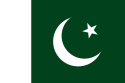

Pakitan
Pakistan,[c] officially the Islamic Republic of Pakistan,[d] is a country in South Asia. It is the world's fifth-most populous country, with a population exceeding 225.2 million, and has the world's second-largest Muslim population. Pakistan is the 33rd-largest country by area, spanning 881,913 square kilometres (340,509 square miles). It has a 1,046-kilometre (650-mile) coastline along the Arabian Sea and Gulf of Oman in the south, and is bordered by India to the east, Afghanistan to the west, Iran to the southwest, and China to the northeast. It is separated narrowly from Tajikistan by Afghanistan's Wakhan Corridor in the north, and also shares a maritime border with Oman. Pakistan is the site of several ancient cultures, including the 8,500-year-old Neolithic site of Mehrgarh in Balochistan,[13] and the Indus Valley Civilisation of the Bronze Age, the most extensive of the civilisations of the Old World.[14] The region that comprises the modern state of Pakistan was the realm of multiple empires and dynasties, including the Achaemenid; briefly that of Alexander the Great; the Seleucid, the Maurya, the Kushan, the Gupta;[15] the Umayyad Caliphate in its southern regions, the Hindu Shahi, the Ghaznavids, the Delhi Sultanate, the Mughals,[16] the Durranis, the Sikh Empire, British East India Company rule, and most recently, the British Indian Empire from 1858 to 1947. Spurred by the Pakistan Movement, which sought a homeland for the Muslims of British India, and election victories in 1946 by the All-India Muslim League, Pakistan gained independence in 1947 after the Partition of the British Indian Empire, which awarded separate statehood to its Muslim-majority regions and was accompanied by an unparalleled mass migration and loss of life.[17] Initially a Dominion of the British Commonwealth, Pakistan officially drafted its constitution in 1956, and emerged as a declared Islamic republic. In 1971, the exclave of East Pakistan seceded as the new country of Bangladesh after a nine-month-long civil war. In the following four decades, Pakistan has been ruled by governments whose descriptions, although complex, commonly alternated between civilian and military, democratic and authoritarian, relatively secular and Islamist.[18] Pakistan elected a civilian government in 2008, and in 2010 adopted a parliamentary system with periodic elections.[19] Pakistan is a middle power, and has the world's sixth-largest standing armed forces. It is a declared nuclear-weapons state, and is ranked amongst the emerging and growth-leading economies,[20] with a large and rapidly-growing middle class.[21] Pakistan's political history since independence has been characterized by periods of significant economic and military growth as well those of political and economic instability. It is an ethnically and linguistically diverse country, with similarly diverse geography and wildlife. However, the country continues to face challenges, including poverty, illiteracy, corruption and terrorism.[22] Pakistan is a member of the United Nations, the Shanghai Cooperation Organisation, the Organisation of Islamic Cooperation, the Commonwealth of Nations, the South Asian Association for Regional Cooperation, the Islamic Military Counter-Terrorism Coalition, and is designated as a major non-NATO ally by the United States.
England

England is a country that is part of the United Kingdom.[7][8][9] It shares land borders with Wales to its west and Scotland to its north. The Irish Sea lies northwest of England and the Celtic Sea to the southwest. England is separated from continental Europe by the North Sea to the east and the English Channel to the south. The country covers five-eighths of the island of Great Britain, which lies in the North Atlantic, and includes over 100 smaller islands, such as the Isles of Scilly and the Isle of Wight. The area now called England was first inhabited by modern humans during the Upper Paleolithic period, but takes its name from the Angles, a Germanic tribe deriving its name from the Anglia peninsula, who settled during the 5th and 6th centuries. England became a unified state in the 10th century and has had a significant cultural and legal impact on the wider world since the Age of Discovery, which began during the 15th century.[10] The English language, the Anglican Church, and English law—the basis for the common law legal systems of many other countries around the world—developed in England, and the country's parliamentary system of government has been widely adopted by other nations.[11] The Industrial Revolution began in 18th-century England, transforming its society into the world's first industrialised nation.[12] England's terrain is chiefly low hills and plains, especially in central and southern England. However, there is upland and mountainous terrain in the north (for example, the Lake District and Pennines) and in the west (for example, Dartmoor and the Shropshire Hills). The capital is London, which has the largest metropolitan area in both the United Kingdom and, prior to Brexit, the European Union.[nb 1] England's population of 56.3 million comprises 84% of the population of the United Kingdom,[5] largely concentrated around London, the South East, and conurbations in the Midlands, the North West, the North East, and Yorkshire, which each developed as major industrial regions during the 19th century.[13] The Kingdom of England – which after 1535 included Wales – ceased being a separate sovereign state on 1 May 1707, when the Acts of Union put into effect the terms agreed in the Treaty of Union the previous year, resulting in a political union with the Kingdom of Scotland to create the Kingdom of Great Britain.[14][15] In 1801, Great Britain was united with the Kingdom of Ireland (through another Act of Union) to become the United Kingdom of Great Britain and Ireland. In 1922 the Irish Free State seceded from the United Kingdom, leading to the latter being renamed the United Kingdom of Great Britain and Northern Ireland.[16
China
China (Chinese: 中国; pinyin: Zhōngguó; lit. 'Central State; Middle Kingdom'), officially the People's Republic of China (Chinese: 中华人民共和国; pinyin: Zhōnghuá Rénmín Gònghéguó; abbr. PRC), is a country in East Asia. It is the world's most populous country, with a population of more than 1.4 billion. China follows a single standard time offset of UTC+08:00 even though it spans five geographical time zones and borders 14 countries, the second most of any country in the world after Russia. Covering an area of approximately 9.6 million square kilometers (3.7 million mi2), it is the world's third or fourth largest country.[j] The country is officially divided into 23 provinces,[k] five autonomous regions, and four direct-controlled municipalities of Beijing (capital city), Tianjin, Shanghai (largest city), and Chongqing, as well as two special administrative regions, Hong Kong and Macau. China emerged as one of the world's first civilizations, in the fertile basin of the Yellow River in the North China Plain. China was one of the world's foremost economic powers for most of the two millennia from the 1st until the 19th century. For millennia, China's political system was based on absolute hereditary monarchies, or dynasties, beginning with the Xia dynasty in 21st century BCE. Since then, China has expanded, fractured, and re-unified numerous times. In the 3rd century BCE, the Qin reunited core China and established the first Chinese empire. The succeeding Han dynasty (206 BCE–220 CE) saw some of the most advanced technology at that time, including papermaking and the compass, along with agricultural and medical improvements. The invention of gunpowder and movable type in the Tang dynasty (618–907) and Northern Song Dynasty (960–1127) completed the Four Great Inventions. Tang culture spread widely in Asia, as the new Silk Route brought traders to as far as Mesopotamia and the Horn of Africa. The Qing Empire, China's last dynasty, which formed the territorial basis for modern China, suffered heavy losses to foreign imperialism. The Chinese monarchy collapsed in 1912 with the 1911 Revolution, when the Republic of China (ROC) replaced the Qing dynasty. China was invaded by the Empire of Japan during World War II. The Chinese Civil War resulted in a division of territory in 1949 when the Chinese Communist Party (CCP) led by Mao Zedong established the People's Republic of China on mainland China while the Kuomintang-led ROC government retreated to the island of Taiwan.[l] Both the PRC and the ROC currently claim to be the sole legitimate government of China, resulting in an ongoing dispute even after the United Nations recognized the PRC as the government to represent China at all UN conferences in 1971. China is currently governed as a unitary one-party socialist republic by the Chinese Communist Party. China is a permanent member of the United Nations Security Council and a founding member of several multilateral and regional cooperation organizations such as the Asian Infrastructure Investment Bank, the Silk Road Fund, the New Development Bank, the Shanghai Cooperation Organization, and the Regional Comprehensive Economic Partnership, and is a member of the BRICS, the G8+5, the G20, the APEC, and the East Asia Summit. It ranks among the lowest in international measurements of civil liberties, government transparency, freedom of the press, freedom of religion and ethnic minorities. Chinese authorities have been criticized by political dissidents and human rights activists for widespread human rights abuses, including political repression, mass censorship, mass surveillance of their citizens and violent suppression of protests. After economic reforms in 1978, and its entry into the World Trade Organization in 2001, China's economy became the second-largest country by nominal GDP in 2010 and grew to the largest in the world by PPP in 2014. China is the world's fastest-growing major economy, the second-wealthiest nation in the world, and the world's largest manufacturer and exporter. The nation has the world's largest standing army—the People's Liberation Army—the second-largest defense budget, and is a recognized nuclear weapons state. China has been characterized as a potential superpower due to its large economy and powerful military.
America

The United States of America (U.S.A. or USA), commonly known as the United States (U.S. or US) or America, is a country primarily located in North America. It consists of 50 states, a federal district, five major unincorporated territories, 326 Indian reservations, and some minor possessions.[i] At 3.8 million square miles (9.8 million square kilometers), it is the world's third- or fourth-largest country by total area.[c] The United States shares significant land borders with Canada to the north and Mexico to the south, as well as limited maritime borders with the Bahamas, Cuba, and Russia.[22] With a population of more than 331 million people, it is the third most populous country in the world. The national capital is Washington, D.C., and the most populous city is New York City. Paleo-Indians migrated from Siberia to the North American mainland at least 12,000 years ago, and European colonization began in the 16th century. The United States emerged from the thirteen British colonies established along the East Coast. Disputes over taxation and political representation with Great Britain led to the American Revolutionary War (1775–1783), which established independence. In the late 18th century, the U.S. began expanding across North America, gradually obtaining new territories, sometimes through war, frequently displacing Native Americans, and admitting new states; by 1848, the United States spanned the continent. Slavery was legal in the southern United States until the second half of the 19th century when the American Civil War led to its abolition. The Spanish–American War and World War I established the U.S. as a world power, a status confirmed by the outcome of World War II. During the Cold War, the United States fought the Korean War and the Vietnam War but avoided direct military conflict with the Soviet Union. The two superpowers competed in the Space Race, culminating in the 1969 spaceflight that first landed humans on the Moon. The Soviet Union's dissolution in 1991 ended the Cold War, leaving the United States as the world's sole superpower. The United States is a federal republic and a representative democracy with three separate branches of government, including a bicameral legislature. It is a founding member of the United Nations, World Bank, International Monetary Fund, Organization of American States, NATO, and other international organizations. It is a permanent member of the United Nations Security Council. Considered a melting pot of cultures and ethnicities, its population has been profoundly shaped by centuries of immigration. The U.S. ranks high in international measures of economic freedom, quality of life, education, and human rights, and has low levels of perceived corruption. However, the country has received criticism concerning inequality related to race, wealth and income, the use of capital punishment, high incarceration rates, and lack of universal health care. The United States is a highly developed country, accounts for approximately a quarter of global GDP, and is the world's largest economy by GDP at market exchange rates. By value, the United States is the world's largest importer and the second-largest exporter of goods. Although its population is only 4.2% of the world's total, it holds 29.4% of the total wealth in the world, the largest share held by any country. Making up more than a third of global military spending, it is the foremost military power in the world; and it is a leading political, cultural, and scientific force internationally.[23]
Russia

Russia (Russian: Россия, Rossiya, Russian pronunciation: [rɐˈsʲijə]), or the Russian Federation,[b] is a country spanning Eastern Europe and Northern Asia. It is the largest country in the world by area, covering over 17 million square kilometres (6.6×106 sq mi), and encompassing more than one-eighth of Earth's inhabited land area. Russia extends across eleven time zones, and has the most borders of any country in the world, with sixteen sovereign nations.[c] It has a population of 146.2 million; and is the most populous country in Europe, and the ninth-most populous country in the world. Moscow, the capital, is the largest city in Europe, while Saint Petersburg is the nation's second-largest city and cultural centre. Russians are the largest Slavic and European nation; they speak Russian, the most spoken Slavic language, and the most spoken native language in Europe. The East Slavs emerged as a recognisable group in Europe between the 3rd and 8th centuries AD. The medieval state of Rus' arose in the 9th century. In 988, it adopted Orthodox Christianity from the Byzantine Empire, beginning the synthesis of Byzantine and Slavic cultures that defined Russian culture for the next millennium. Rus' ultimately disintegrated until it was finally reunified by the Grand Duchy of Moscow in the 15th century. By the 18th century, the nation had greatly expanded through conquest, annexation, and exploration to become the Russian Empire, the third-largest empire in history. Following the Russian Revolution, the Russian SFSR became the largest and leading constituent of the Soviet Union, the world's first constitutionally socialist state, which had a one-party system throughout most of its existence. The Soviet Union played a decisive role in the Allied victory in World War II, and emerged as a superpower and rival to the United States during the Cold War. The Soviet era saw some of the most significant technological achievements of the 20th century, including the world's first human-made satellite and the launching of the first human in space. Following the dissolution of the Soviet Union in 1991, the Russian SFSR reconstituted itself as the Russian Federation. In the aftermath of the constitutional crisis of 1993, a new constitution was adopted, and Russia has since been governed as a federal semi-presidential republic. Vladimir Putin has dominated Russia's political system since 2000, and his government has been accused of authoritarianism, numerous human rights abuses, and corruption. Russia is a great power, and is considered a potential superpower. It is ranked 52nd in the Human Development Index, with a universal healthcare system, and a free university education. Russia's economy is the world's eleventh-largest by nominal GDP and the sixth-largest by PPP. It is a recognised nuclear-weapons state, possessing the world's largest stockpile of nuclear weapons, with the world's second-most powerful military, and the fourth-highest military expenditure. Russia's extensive mineral and energy resources are the world's largest, and it is one of the leading producers of oil and natural gas globally. It is a permanent member of the United Nations Security Council, a member of the G20, the SCO, the Council of Europe, the APEC, the OSCE, the IIB and the WTO, as well as the leading member of the CIS, the CSTO, and the EAEU. Russia is also home to the ninth-greatest number of UNESCO World Heritage Sites.
Pakitan
England
China
America
Russia